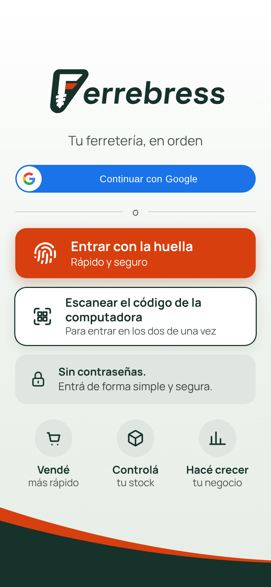
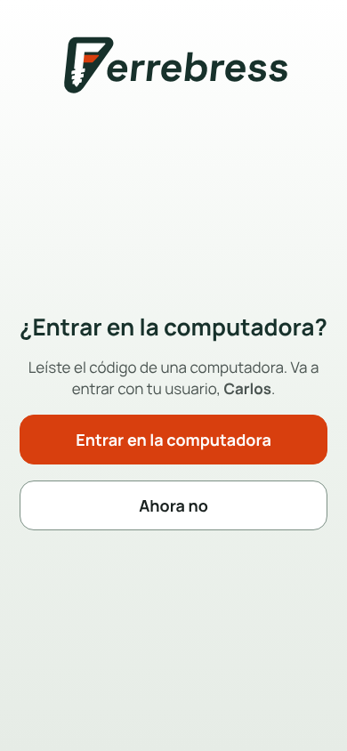
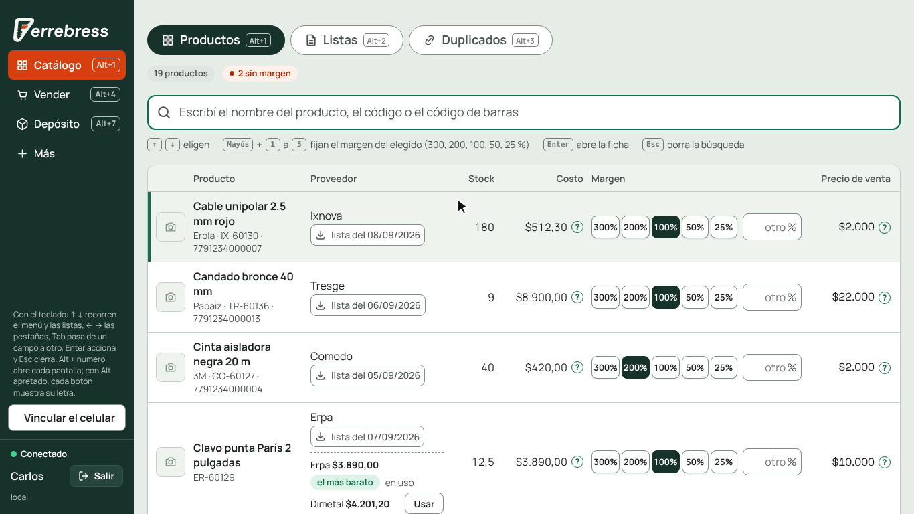
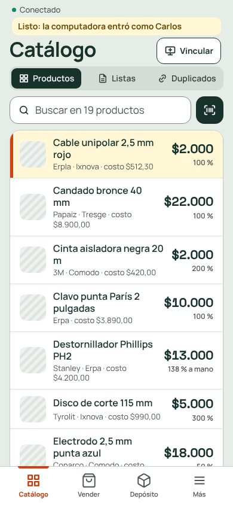
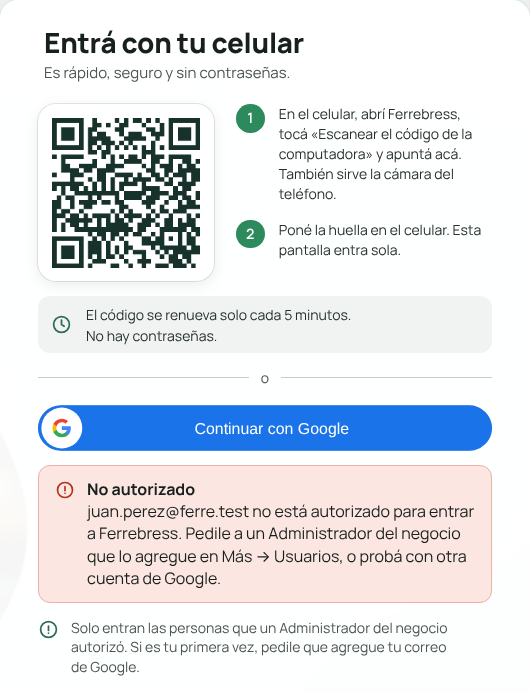

Capítulo 1
Entrar a Ferrebress
Ferrebress no usa contraseñas. En la computadora entrás con tu celular, leyendo un código que aparece en la pantalla. Tarda unos segundos.
Antes de empezar: solo entran las personas que un Administrador del negocio autorizó. Si es tu primera vez, pedile que agregue tu correo de Google en Más → Usuarios.
Entrar en la computadora con el celular
Es la forma más rápida: la computadora muestra un código, el celular lo lee y la computadora entra sola, con tu usuario.
Abrí Ferrebress en la computadora
Aparece la pantalla de entrada, con el código ya listo. No hace falta tocar nada.
- 1El código que lee el celular.
- 2Los dos pasos, por si te olvidás.
- 3El código cambia solo cada 5 minutos: si se venció, leé el que está a la vista.
- 4La otra forma de entrar, con tu cuenta de Google (más abajo).
Leé el código con el celular
Abrí Ferrebress en el celular y tocá Escanear el código de la computadora. Apuntá la cámara al código de la pantalla. También sirve la cámara del teléfono, sin abrir Ferrebress.
Si es la primera vez en ese celular, antes entrá con Continuar con Google (más abajo, en «Otras formas de entrar»).

Confirmá en el celular
Si en el celular ya tenías la sesión abierta, pregunta «¿Entrar en la computadora?»: tocá Entrar en la computadora. Si no la tenías, poné la huella.
Con «Ahora no», la computadora no entra y el celular sigue donde estaba.

Listo: la computadora entra sola
En unos segundos la computadora entra con tu usuario, y el celular avisa arriba «Listo: la computadora entró como …». Los dos siguen con lo suyo.


De paso, quedan vinculados. El celular que dejó entrar a la computadora queda unido a ella: lo que escanees con el celular aparece en la computadora, y desde la computadora le podés pedir fotos.
Otras formas de entrar
Con tu cuenta de Google
En la entrada de la computadora o del celular, tocá Continuar con Google y elegí tu cuenta. Es la forma de entrar la primera vez en un celular.
Con la huella
En un celular que ya vinculaste con tu cuenta, tocá Entrar con la huella. La primera vez que entrás con Google desde un celular, Ferrebress te ofrece vincularlo; también se hace desde Más → Usuarios, en la pestaña «Sesiones».
Si algo no funciona
| Qué pasa | Qué hacer |
|---|---|
| Dice «No autorizado» | Tu correo de Google no está autorizado. Pedile a un Administrador que lo agregue en Más → Usuarios, o probá con otra cuenta. |
| El celular dice que el código venció | El código dura 5 minutos y sirve una sola vez. Leé el que la computadora muestra ahora. |
| No aparece el código | La computadora no tiene internet. Cuando vuelva la conexión, el código aparece solo. |
| No se pudo leer la huella | Probá de nuevo, o entrá con tu cuenta de Google. |
| Dice «Hay que iniciar sesión» | La sesión de ese dispositivo se cerró o venció. Entrá de nuevo. |
